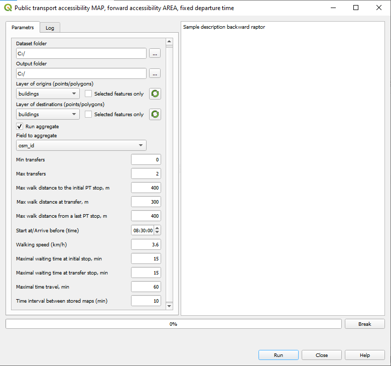

6. Public transport: Accessibility MAP, fixed start/arrival time¶
6.1. The necessary dataset¶
GTFS dictionary, see Building the Accessibility dictionary (pkl)
The layer of buildings that must be opened in the current QGIS project.
6.2. The computation steps¶
Run the plugin and choose
Public transport accessibility MAP -> Forward accessibility MAP, fixed departure time.orPublic transport accessibility MAP -> Backward accessibility MAP, fixed arrival time.
Enter the parameters of computation:
The meaning of parameters:
Dictionary folder: The folder of the dictionary, must contain
stops.pkl,stoptimes.pkl,transfers_dict.pkl,idx_by_route_stop.pkl, androutes_by_stop.pklOutput folder: The folder to store the results of the computation.
Layer of origins/Layer of destinations: The layer of the origins for the Forward and of destinations for the Backward accessibility.
Visualization layer: The visualization layer - the layer of buildings, or another layer of features that have identifiers of the buildings ADD LINK.
Aggregate:
If not checked, the total number of buildings that can be accessible in a given time will be calculated.If checked, one or more attributes of the buildings layer that represent buildin’s capacity must be selected.For example, to assess accessibility to jobs, the field that contains number of jobs in a building must be chosen.There can be several attributes each containing the number of jobs of a certain kind in a building. You could choose several cattributes to aggregate and calculate accessibility to jobs of each kind.The fields to aggregate: The names of fields for aggregation (FA1, FA2, …).
Min transfer: Minimal number of the PT trip transfers (usually, 0).
Max transfer: Maximal number of the PT trips transfers, currently 2 or less.
Max walk distance to the initial PT stop, m: Maximal acceptable for travelers walking distance between the Origin of a trip and and the first bus stop, meters (default - 400 m).
Max walk distance at transfer, m: Maximal acceptable for travelers walking distance between two stops at the transfer, meters (default - 150 m).
Max walk distance from a last PT stop, m: Maximal acceptable for travelers walking distance between the last stop of a trip and the destination, meters (default - 400 m).
Start at/Arrive before (hh:mm:ss): Forward accessibility - the trip start time; Backward accessibility - the latest arrival to destination
Walking speed (km/h): Walking speed.
Maximal waiting time at initial stop, min: Maximal waiting time at the initial stop of the trip, minutes.
Maximal waiting time at transfer stop, min: Maximal waiting time at the transfer, minutes.
Maximal time travel, min: Maximum total trip time.
Time bin for storing the results: The time bin for storing accessibility computation results. The default bin is 5 minutes that is, assessing accessibility to jobs, you will get the number of jobs accessible in 5, 10, 15, … minute trips, up to a Maximum travel time.
The 2- or even 1-minute bin can be useful for further analysis of the accessibility computation results (see LINK).
4. Click Run to start. The progressbar shows the progress of the computations. The Log tab contains the metadata on the results. You can break the computations by pressing Break.
In case the computations were based on the selection of buildings, the results will contain these buildings as a separate layer.
6.3. How to exclude bus lines from the PT network¶
6.4. How to add new bus lines to the PT network¶
6.5. Report structure¶
Attribute |
Meaning |
|---|---|
Origin_ID/Destination_ID |
ID of the building of origin or destination |
Time_bin1 |
The first time bin |
Number_of_buildings1 |
Number of buildings accessible during the first time bin |
FA1_Aggr1 |
Total capacity of buildings accessible during the first time bin accordig to the FA1 |
FA2_Aggr1 |
Total capacity of buildings accessible during the first time bin accordig to the FA2 |
Other aggregated fields |
Total capacity of buildings accessible during the first time bin other aggregate fields |
Time_interval2 |
The second time bin |
Results for the next time bins |
Number of buildings and aggregate capacities for the second time bin |